AIに同じことを何回も説明してる人へ。
みんなの「共有ノート」を1冊つくろう📓
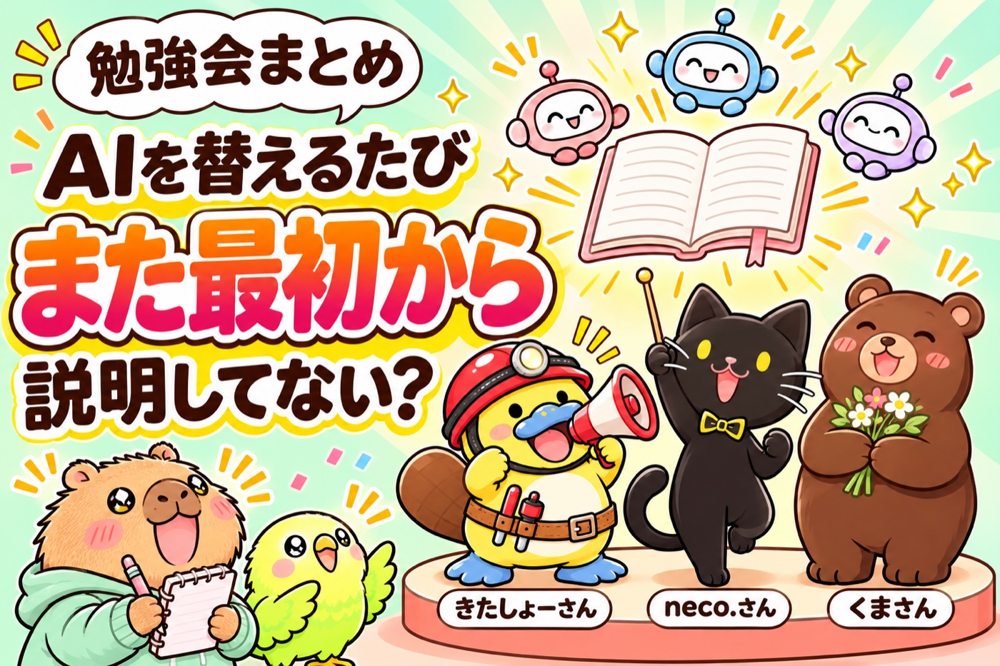
そんなふうに感じたこと、ありませんか？😊
どんな会？
2026年11月19日に neco.さんが開いたオンライン勉強会「複数AIを使っている方必見！ AIの『共有脳』をつくろう」のまとめ資料です。ライブ配信もあり、当日は300人を超える方が参加した約1時間55分の会でした。会の全部の書き起こしではなく、おけもんが内容をかみ砕いてまとめたものです。
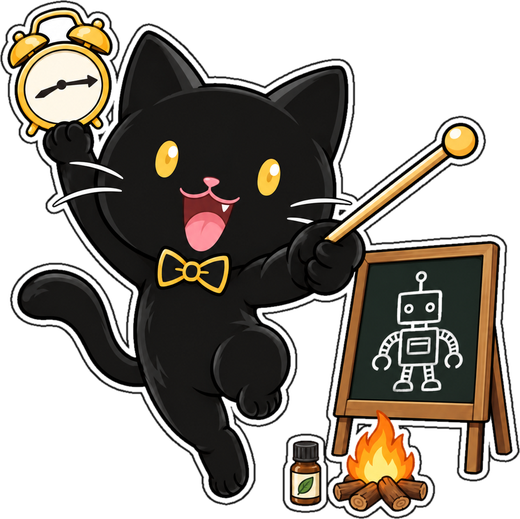
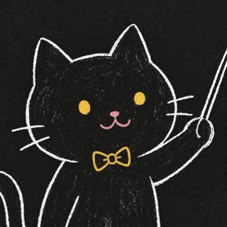
neco.さん講師会をひらいて、はじめから終わりまで教えてくれました
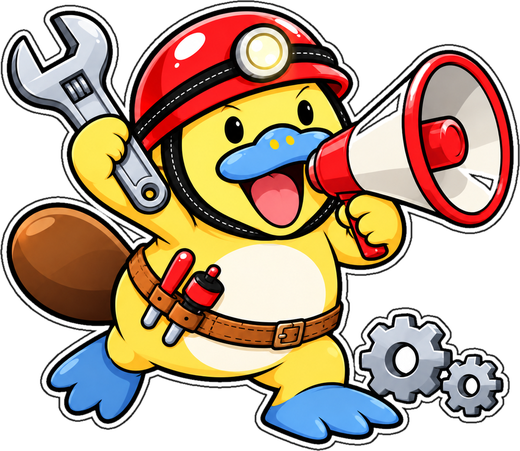
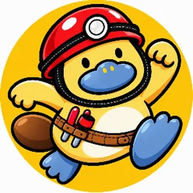
きたしょーさんいっしょに進行「Notionは初めて」の目線で、いっしょに進めてくれました
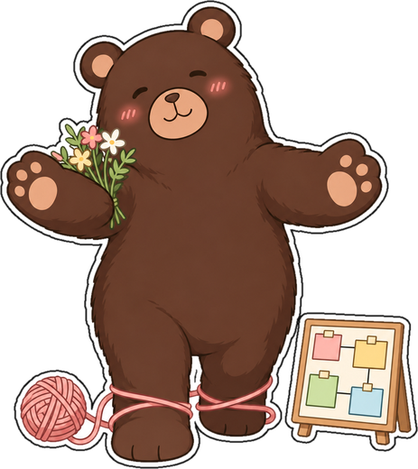
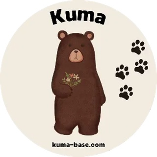
くまさんNotionの先輩ひと足先にNotionを使っている先輩として紹介されていました
すてきな会をひらいてくださったみなさんに、感謝をこめて🙏
どう進んだ？
当日は、こんな4つの流れで進みました👇
- 「AIの共有ノートって何？」の説明AIは1人ずつ別々の記憶を持っている話と、やることは3ステップ（Notionの無料アカウントを作る／使っているAIをNotionとつなぐ／つないだAIに公式ガイドのURLを貼って頼む）
- 実演neco.さんのNotionの画面を見せながら、AIが書いた記憶が1行ずつ並んでいる様子
- みんなでつないでみる時間参加者さんも一緒に、その場で自分のAIをNotionに。うまくいかない所はチャットで質問しながら進みました
- 使い道の話と質問タイムタスクをみんなで持つ、リマインドの係を決める
誰に向けた資料？
こんな方に向けた資料です🙌
- 勉強会に出られなかった方
- 出たけれど、途中で置いていかれてしまった方
- ChatGPTやClaudeを使い始めたばかりで、横文字が苦手な方
読むと分かること
この資料を読むと、次の4つが分かるようになります😊
- なんでAI同士で話が通じないのか
- 共有ノートを1冊つくると、何が変わるのか
- 今日1つ試すなら、どこから始めればいいか
- Google Drive・Obsidian・GitHub・Notionは、何が違うのか
💡ひとことで言うと
この勉強会のいちばん大事なポイントを、ぎゅっとひとことで言うとこうなります👇
みんなで見られるメモの置き場所を1つ作っておこう
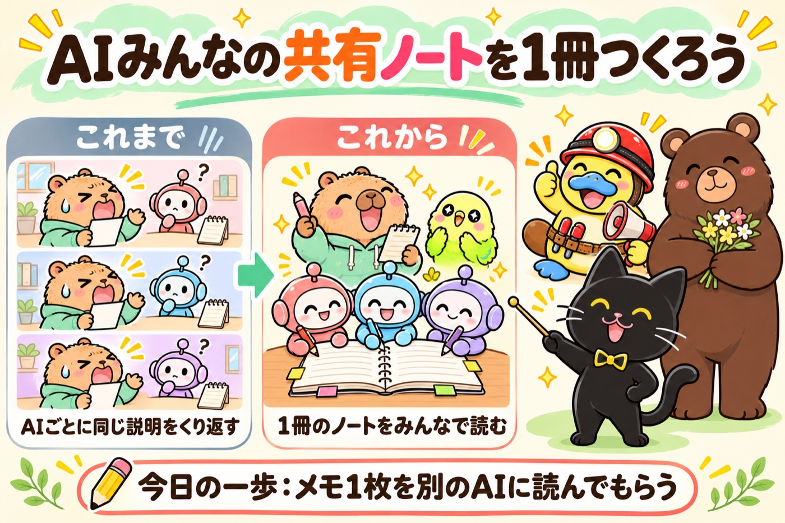
横文字は出てくるその場で身近な物にたとえて書いているので、「わからん…」とならずに読み進められますよ😊
ではさっそく、メモの置き場所がバラバラだと実際どんなことが起きるのか――ちょっと笑える行き違いの実話から見ていきましょう👇
🌀「ちょっとぷんぷんです」事件が起きた朝
この資料をまとめた私（おけもん）が、11月21日の朝にやらかした実話です🤣
私はふだん、AIを何人も使い分けています。パソコンの中で作業してくれるAI、スマホで話すAI、といった感じです。
その日の朝、あるAIに「あの入金、入ったよー」と伝えました。
ところが、お金まわりの窓口を任せている別のAIは、それを知らないまま。
あとからその子に話しかけたら、こう言われてしまったんです👇
もうね、思わず出ましたよ。
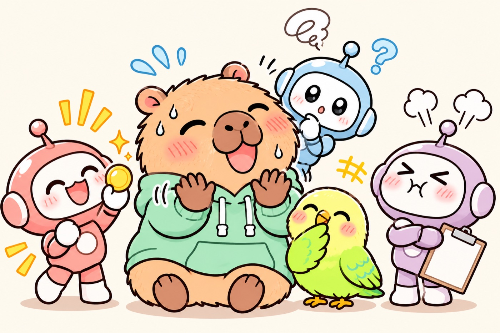
本当は、「一つが変わったら他のところに自動反映される、イコール関数みたいな感じ」が理想なんです😂
ちなみに私はこれまで、Obsidian（自分のパソコンの中に置くメモ帳アプリ）とGitHub（「いつ・誰が・どこを変えたか」が全部残る保管庫）を使って、AIみんなが読めるメモの置き場所――私は『森』と呼んでいます――を作ってきました。
それでも、上の行き違いは起きるんですよねぇ😅
そんなタイミングで、neco.さんの勉強会で「Notion（ネット上のノートと表が一緒になったアプリ）で共有ノートを作る方法」を見て、
と腹落ちしたんです。
※Notionの共有メモリーは、私自身はまだ設定していません。まずは勉強会で学んだことを整理して、私もこれから試してみる立場です😊
🤔なんでAI同士で話が通じないの？
理由はひとつ。AIは、1人ずつ別々の記憶を持っているからです。
チャッピー（ChatGPT）に話したことは、基本的にチャッピーしか知りません。クロード（Claude）は知らないし、クロードに話したことは、スマホで話せるAIアプリのミューズも知らないんです。
イメージとしては、みんな別々の部屋にいて、それぞれ自分だけのメモ帳を持っている状態📝
だから私たちが1人ずつ部屋を回って「あのね、私の好みはね…」と伝え直さない限り、情報はバラバラのままになります。
しかもパソコンの中で動くAI（Claude CodeやCodexなど）はパソコンの中のファイルを見られますが、スマホで話すAIはパソコンの中を見に行けません。それで余計に記憶がズレやすいんですよね。
さらに勉強会で「へぇ！」と思ったのが、次の2つ👇
💡 スマホのAIアプリを無料で使っていると、アプリの中の記憶欄（メモリー）が増えすぎて、性能に影響が出ることがあるそうです。だからアプリの中の記憶はシンプルにして、外に置いた方が身軽に使える、というお話でした。
💡 AIの中に覚えたことは、どこに何が書いてあるか、人間から見づらい。
だからこそ、「AIの外に、人間からも見やすい共有ノートを1冊置こう」という話になるわけです😊
📓勉強会で見た、AIみんなの「共有ノート」
2026年10月19日に、Notionが「外のAIと記憶を共有する機能」を始めました。
NotionにつないだChatGPTやClaudeなどが、自分専用の同じ「メモリー（記憶欄）」を読んだり書いたりできるようになったんです。
つなぐ仕組みの名前は「Notion MCP」。
横文字で身構えますが、公式の説明では「AIがNotionのページを読み書きできるようにする橋のようなもの」とされています🌉
パソコンのAIも、スマホのAIも、この橋を渡ってネット上の同じノートを見に来られるイメージです。
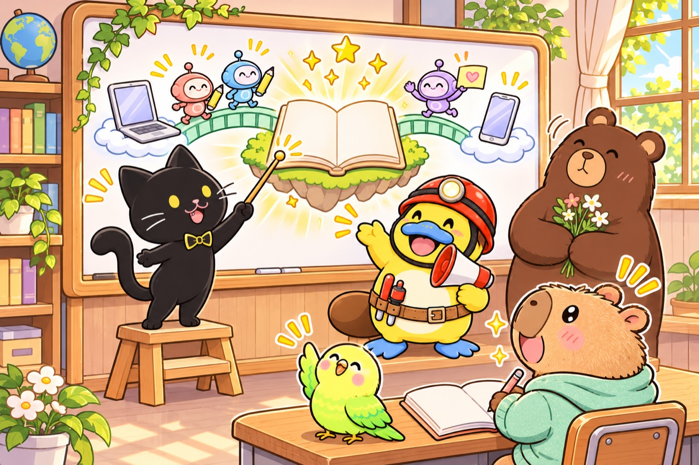
勉強会では、実際に動いている場面を見て「おおっ😳」となったところが3つありました。
1自分の好みが、ちゃんとノートに残っていた
neco.さんがミューズに「お気に入りの蜂蜜カモミールはこれだよ」と教えたら、ミューズがNotionの記憶欄にちゃんと登録しておいてくれたんです☕
仕事の背景や運用ルールも1行ずつ並んでいて、人間が画面を開いて中身を確認したり、古くなったルールを直したりもできます。
23人のAIが、かぶらないように協力し始めた
勉強会で実際にNotionとつないだ参加者さんからは、「やばい、強くなった気がする」という声が🙌
さらに別の参加者さんは、前のめりに3つのAI（ミューズ・Codex・Claude）へ同時に同じお願いを送ってしまったそうなんですが、なんとミューズが最初に土台を作り、Codexが6件、Claudeが5件を、重ならないように見比べながら書き足してくれたそうです😳
3「あれ、誰に頼んだっけ？」が無くなる
neco.さんはふだん、ミューズやドット（スマホで話せるAIアプリ）、チャッピーにあちこちで「これ覚えといて」「リマインドして」とタスクを伝えていて、「誰に言ったっけ？」となって困っていたそうです。
それが、みんなでNotionのタスク表に書いて読みに行くようにしたら、誰にお願いしたことも全員が知っていてくれる状態に✨
「終わったよ」とチェックをつければ、他のAIも「あ、これは完了だね」と分かってくれる。まさに「3人の秘書チーム」みたいで、ちょっとワクワクしました😆
🔄ビフォーアフターで見ると、こう変わる
これまでと、共有ノートを作ってからの違いを並べてみると、こんな感じです👇
⚠️ここだけは気をつけて！落とし穴2つ
ただ、つないだら全部おまかせで完璧、というわけでもないようです。勉強会と公式ヘルプでわかった「落とし穴」を2つ置いておきますね。
落とし穴①「書いてね」「見てね」と頼まないと動かない
Notionの公式ヘルプにも、「つないだだけでは、ほとんどのAIは頼まれない限りNotionを使わない」と注意書きがあります。
だから最初に、「セットアッププロンプト（最初の設定をAIと一緒にやるための、公式が用意した頼み文）」を、つなぐAIごとに1回ずつ実行しておくのがポイント。
ちなみに勉強会でも、neco.さんがCodexに公式ガイドのURLを貼ったのに、実はURLが見えていなかったのに「見た風」に進めてしまった、というハプニングがあったそうです🤣
AIには「ちゃんと見てやってね」と一言添えるのも大事ですね。
それと、置き場所を2つ作ると「どっちが本当かわからん！」となります（私はこれを何百回もやりました🤣）。置き場所は1つに決めるのが鉄則です。
落とし穴② 全員に「リマインドして」と言うと、3人から通知が来る🤣
「忘れてたら教えてね」と3人全員に頼むと、3か所からわあわあリマインドが飛んでくるそうです😂
neco.さんはペットボトルを捨てる日にチャッピーの通知を無視して捨て忘れてしまったそうで、「あえて全員から言ってもらおうかな」と笑っていましたが、騒がしいのが苦手な方は、
- 「登録はみんなにするけど、リマインド係はミューズに任せるね」と係を1人に決める
- 誰かがリマインドしたらチェック済みにして、他の子は言わないように頼んでおく
こんなふうに役割を分けておくとスッキリしますよ😊
🐾今日やってみるなら、この3ステップ
いきなり全部を完璧にしなくて大丈夫です。今の自分の段階に合わせて、1つだけ試してみてくださいね🙌
まずはメモ1枚で体験してみる
すでにGoogleドキュメントなどを使っているなら、新しいアプリを増やさなくても大丈夫。
いま話しているAIに、下の文をそのまま送ってみてください。
返ってきたメモを別のAIに貼って、「これを読んでから答えて」と渡すだけ。
「外に置くってこういうことか！」が体験できます😊
AIを2つ以上使っているなら、Notionとつないでみる
勉強会で紹介されていた手順は、シンプルに3つ👇
- Notionの無料アカウントを作る
- 使っているAIを1つ（複数でもOK）Notionとつなぐ
- つないだAIに公式ガイドのURLやセットアッププロンプトを渡して、一緒に設定してもらう（「ちゃんと見てやってね」の一言も！）
公式の案内はこちらです👉 AIツールをNotion MCPと接続する（Notionヘルプ）
最初に一言だけ頼んでおく
つながったら、AIにこう伝えておきます。
※公式の注意書きによると、メモリー（記憶欄）に向いているのは「好み・仕事の背景・よく使うページ」など長く役に立つこと。一度きりの頼みごとや、今日の予定・残高などの最新情報は、メモリーではなく普通のページや表に書くのがおすすめです。
💬よくある質問
チャットでよくいただく「横文字がいっぱいでわからん…」に、まとめてお答えしますね🙌
Google Drive・Obsidian・GitHub・Notionって、何が違うんですか？
先に共通点から。じつは、4つとも同じ役目なんです。
みんなで見られるメモの置き場所」
考え方は全部同じで、置いてある場所と得意なことが少しずつ違います👇
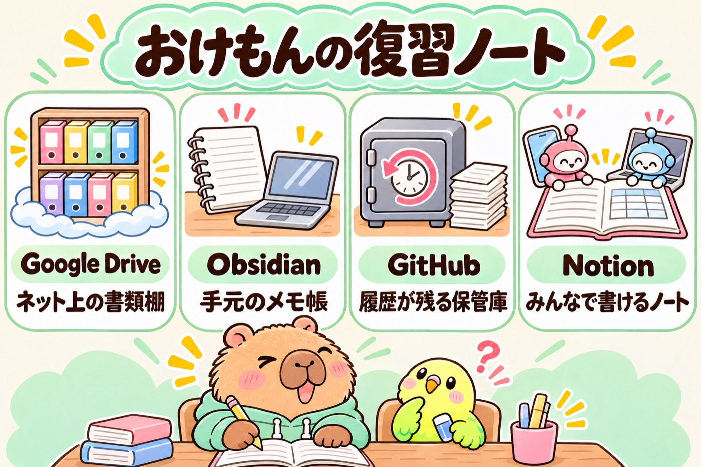
Google Driveグーグルドライブ
ネット上の書類棚- 得意
- ふだんのGoogleドキュメントをそのまま使えて、AIに「この書類を読んで」と渡しやすい
- 苦手
- AIが自分から書き足していくのは、あまり得意ではない
Obsidianオブシディアン
パソコンの中のメモ帳アプリ- 得意
- 手元にあるので、パソコンの中で作業するAI（Claude CodeやCodex）が読み書きしやすい
- 苦手
- スマホで話すAIからは届きにくい
GitHubギットハブ
履歴が全部残る保管庫- 得意
- 「いつ・誰が・どこを変えたか」が残って、間違えても前の状態に戻せる
- 苦手
- 最初の壁が高め
Notionノーション
ネット上のノートと表- 得意
- スマホのAIもパソコンのAIも同じ場所に届く。AI同士の共有メモリーがある
- 苦手
- 自由すぎて、最初は使い方のイメージが湧きにくい
私自身はObsidian＋GitHubで『森』を作っていて、neco.さんの勉強会ではNotionを使っていました。どれも「外に1つ置く」というゴールは同じです😊
AIを1つしか使っていない私にも関係ありますか？
関係あります！
外にメモを置いておくと、人間が見て「変なこと覚えてないかな？」と直しやすくなります。AIアプリの中の記憶を身軽に保てるのもメリット。
将来2つ目のAIを試したくなったときにも、そのまま引き継げますよ🙌
無料でできますか？
Notion AIそのものはビジネスプラン以上に含まれますが、つないだ外のAIが書いたメモリーもNotionに表示される、と公式ヘルプに書かれています。勉強会でも無料の範囲で試している様子でした。
ただ、料金や条件は変わることがあるので、始める前に必ず公式ページで確認してくださいね😊
個人情報は大丈夫ですか？他の人に見られたりしませんか？
公式ヘルプでは、メモリーは本人だけのものとされています。中身は自分で開いて、いつでも直したり消したりできます。
長く使う好みや方針を中心にしつつ、中身をときどき自分の目で確かめながら使うのが安心です😊
👉 メモリーの公式説明（Notionヘルプ）
「MCP」って何ですか？横文字で止まりました…
「Notion MCP」のことですよね。名前はちょっと強そうですが🤣、公式の説明では「AIがNotionのページを読み書きできるようにする橋のようなもの」です。
細かい仕組みを覚える必要はありません。「AIとノートをつなぐ橋なんだな」くらいのイメージで大丈夫ですよ🌉
結局、どれから始めればいいですか？
すでにGoogleドキュメントを使っているなら、まずはメモ1枚（「決まったこと／まだのこと／次に頼みたいこと」）を作って、別のAIに読んでもらうところから。
すでにAIを2つ以上使っていて「毎回同じ好みを説明してるな…」と感じているなら、Notionの共有メモリーを試す番です😊
☘️おしゃれに作り込まなくて大丈夫。まずは1歩から
Notionって、いろんなおしゃれな見た目にもできるんですが、勉強会でもneco.さんが「最初に見た目に凝りすぎて、更新がめんどくさくなってやらなくなるのがNotionあるある」と話されていて🤣
今回は、きれいなノートを自分で作る必要はありません。
あくまで「AIたちの記憶の置き場所」として置いておいて、「こうなっててほしいな」というイメージをAIに相談しながら進めてもらえば大丈夫です😊
私も「ぷんぷん事件」を繰り返さないように🤣、まずはNotionの共有メモリーをこれから試してみます！
気になった方は、メモ1枚からでも、ぜひ一緒に試してみてくださいね🙌
わかりやすく勉強会を開いてくださったneco.さん、本当にありがとうございました！😊
・neco.さんの勉強会「複数AIを使っている方必見！ AIの『共有脳』をつくろう」（2026年11月19日）
・Notion公式ヘルプ「AIツールをNotion MCPと接続する」「Notionエージェントのメモリーを表示する」（2026年11月21日に確認）
・置き場所の比べ方は、おけもんの整理です。料金や機能は変わるので、始める前に公式ページをご確認ください。